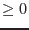
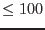
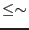
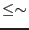

| Parameter | Mand | Type | Default | Constraints |
| eventset | yes | string | | |
input events file (either single-chip event file from epframes
or emevents, or merged, calibrated multi-chip event file)
|
| searchbadpix | no | logical | Y | Y/N |
search for bad pixels?
|
| withsearchbadcolumn | no | logical | N | Y/N |
search for bad total columns?
|
| userflagbadpix | no | logical | N | Y/N |
user-flag specific (sets of) bad pixels?
|
| thresholdlabel | no | string | rate | peak/counts/rate |
Thresholds (all) choice - thresholds refer to percentage of PEAK value in the
dataset, to count RATE or to pure COUNTS
|
| ccd | no | integer | 1 | 1-12 |
chip on which to search bad pixels if task is run on multi-chip event list
|
| lothresh | no | real | 0.0 |  ( for thresholdlabel=peak) |
Low
threshold value for dead pixel search (searchbadpix=Y)
|
| hithresh | no | real | 0.005 | ( for thresholdlabel=peak) |
High threshold value for hot pixel search (searchbadpix=Y)
|
| loenergythresh | no | real | 0.0 | 0.0-30.0) |
Low energy (in keV)
bound for searching
|
| hienergythresh | no | real | 30.0 | 0.0-30.0) |
High energy (in keV)
bound for searching
|
| cellsize | no | integer | 2 | 1-10 |
Cell size for PSF comparison (total width: 1 + 2 cellsize ) cellsize )
|
| narrowerthanpsf | no | real | 3.0 | |
PSF-pixel(s) compactness comparison - 1, equal to PSF,  1, more compact,
and hence likely, not a source 1, more compact,
and hence likely, not a source
|
| backgroundrate | no | real | 0.00001 | |
Background rate (ct/s/pix) - if negative, mean over entire field assumed
|
| threshabovebackground | no | logical | N | Y/N |
determine whether hithresh and hicolthresh refer to
values above the background rate (Y) or as total values (N)
|
| columnsearchlabel | no | string | median | median/total |
withsearchbadcolumn=Y thresholds choice - locolthresh&
hicolthresh refer to TOTAL column value or MEDIAN column value
|
| locolthresh | no | real | 0.0 | ( for thresholdlabel=peak) |
Low threshold value for dead column search (withsearchbadcolumn=Y)
|
| hicolthresh | no | real | 0.0015 | ( for thresholdlabel=peak) |
High threshold value for hot column search (withsearchbadcolumn=Y)
|
| flickertimesteps | no | integer | 1 |  ( 15
[see comments]) ( 15
[see comments]) |
Number of timesteps to search for flickering pixels
|
| flickerksthresh | no | real | 0.55 | 0-1 |
K-S threshold for low count flickering pixels
|
| flickerchisqthresh | no | real | 15.0 | |
Reduced Chi-sq threshold for high count flickering pixels
|
| rawxlist | no | integer list | | 1-600 |
List of user-flagged RAWX values (userflagbadpix=Y)
|
| rawylist | no | integer list | | 1-600 |
List of user-flagged RAWY values (userflagbadpix=Y)
|
| typelist | no | integer list | | 1-5 |
List of user-flagged TYPE values (userflagbadpix=Y)
|
| yextentlist | no | integer list | | 1-600 |
List of user-flagged YEXTENT values (userflagbadpix=Y) [Note: these
four `lists' must contain equal number of entries]
|
| badpixset | no | string | badpixfind.fits | |
output file from badpixfind
containing set of bad pixels (input to
badpix
|
| withbadpixmap | no | logical | N | Y/N |
Create bad pixel image map?
|
| withfovmask | no | logical | N | Y/N |
Mask out regions outside of the field of view (FOV) in map?
|
| mappixcellsize | no | integer | 1 | ,  |
Bad cell surrounding bad pixel in map (total width: 1 + 2
mappixcellsize )
|
| badpixmap | no | string | badpixmap.fits | |
Bad pixel image map file name
|
(note: Default settings are reasonable for MOS analysis, and very conservative
for pn analysis [see comments for discussion])
| Parameter | Mand | Type | Default | Constraints |